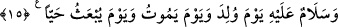

atfedilmiştir. Yani Yahya (a.s.) anne babasına iyilik eden, onlara yumuşak davranan bir
kimse idi. “Baş kaldıran bir zorba değildi.” Yani o, kibirli, anne babasını inciten veya
Rabb’ine isyan eden birisi de değildi.
Bahru’l-ulûm’da şöyle der: “Âyette geçen ‘el-Cebbâr’ kelimesi, kibirli anlamına
gelir veya sonuçlarına bakmaksızın kızdığı zaman döven ve öldüren kimse demektir.
Onun Allâh’ın emirlerine boyun eğmeyen ve kendini büyük gören kimse olduğu da
söylenmiştir.”
15. Doğduğu gün, öleceği gün ve diri olarak kaldırılacağı gün ona selâm olsun!
Annesinin rahminden “doğduğu gün,” diğer insanların uğradığı şeytanın dürtmesinden
(ta‘nından), tabiî ölümle “öleceği gün” ölümün korkularından ve kabir azabından “ve
diri olarak kaldırılacağı gün” kıyâmetin ve cehennem azâbının korkularından “ona”
Yahya (a.s.)’a “selâm olsun!”Allah Teâlâ’dan selâmet ve emân/emniyet olsun.
Cümlenin aslı şöyledir: “Bu hâllerde biz ona selâm verdik. Bu hâller ise insanın en
yalnız olduğu yerlerdir.” Selâmın devamlı ve yerleşmiş olduğu belli olsun diye cümle
fiil cümlesinden isim cümlesi şekline çevrilmiştir. Çünkü Hz. Yahya’nın bu hâllerdeki
yalnızlığı ancak selâmın varlığı ve devamıyla ortadan kalkabilirdi.
Bu âyette tabîat annesinden doğuşa, Allah’ta fânî olmakla tabîatın gerektirdiği
şeylerden ölmüş gibi kurtulmaya ve fânî olduktan sonra yeniden dirilmekle bâkî
kalmaya işâret vardır.
İbn Ebî Uyeyne demiştir ki: “Âyette sayılan durumlar arasında insanın en çok
yalnızlık ve gariplik çektiği gün, öncelikle doğduğu gündür ki daha evvel bulunduğu
yerden çıkar. Sonra ise öldüğü gündür. Çünkü o gün daha önce görmediği bir takım
toplulukları görür. Daha sonra da yeniden dirildiği gündür. Çünkü o günde daha evvel
görmediği bir meydanda (mahşerde) kendisini bulur. Özellikle Hz. Yahya bu
durumlardan selâmette kılınmıştır.”
Bilesin ki Zekeriyya (a.s.), insan ruhuna; hanımı ruhun eşi olan bedene; Yahya (a.s.) da
kalbe işarettir. Buna göre uzun zaman kalıba (bedene) bağlı kalması sebebiyle ruh,
vâsıtasız olarak ilâhî feyzi kabul edecek bir kalb meydana getirmekten uzak olmuştur.
Nitekim kudsî hadiste Allah şöyle buyurmuştur: “Beni, yerim ve göğüm içine alamaz,
ama mü’min kulumun kalbi içine alır.”[9] Bu ezelî bir feyizdir ki canlılardan ve
meleklerden hiçbirine verilmemiştir. Nitekim Molla Câmî şöyle der:
Güzel ibâdet ve tâatten meleklere ne fayda var?
Âdem (a.s.)’ın üzerine aşkın feyzi döküldüğünden beri